Every cartoon in The Marriage Contract, 2027
The book has a cartoon in nearly every chapter, because the law of marriage is stranger than most people expect. Click one to see it full size, with the chapter it comes from.
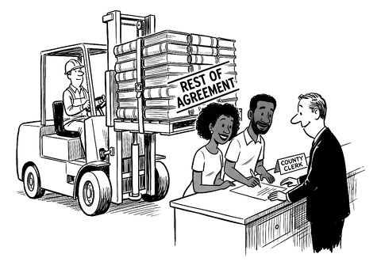
“Sign here. The rest will be along shortly.”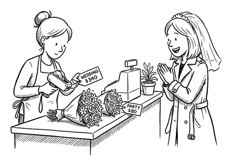
“It’s the same flowers. These ones are committed.”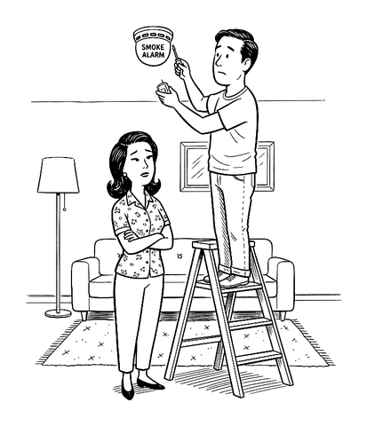
“So you’ve been thinking about burning the house down.”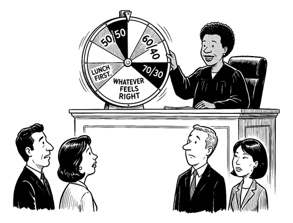
“The court has carefully weighed all eleven statutory factors.”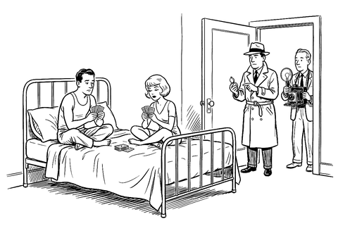
“We’re a little early. Should we come back and be shocked at nine?”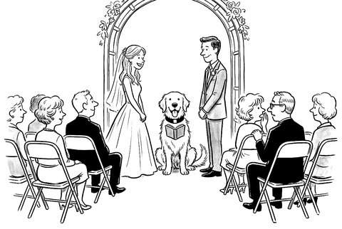
“By the powers vested in me by cheap-officiant-certs.com, I now pronounce you man and wife.”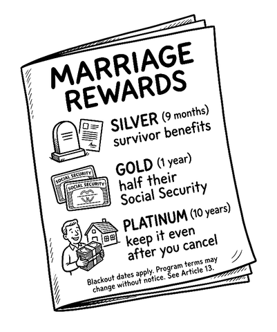
“Members enjoy priority boarding at the emergency room.”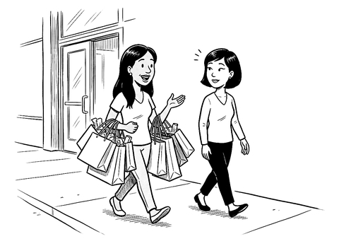
“I like to think of it as our tendency to overshare.”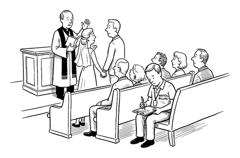
“… in sickness and in health…” “Could you repeat that last part? For our records.”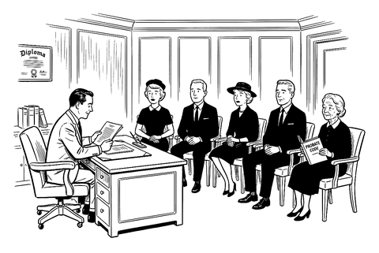
“And to my beloved wife, I leave… whatever the statute was going to give her anyway.”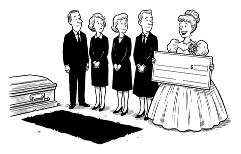
“I’m so sorry for your loss. I haven’t seen him since 1994. Apparently he never updated a thing.”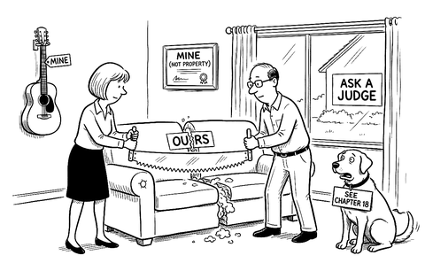
Chapter 11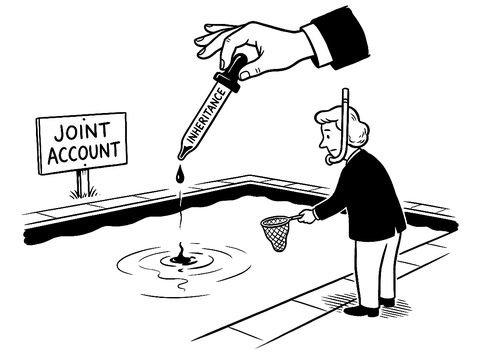
“Don’t worry. We’ll trace it.”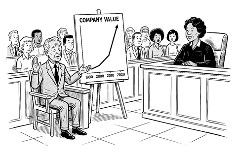
“Honestly, Your Honor, I mostly just watched.”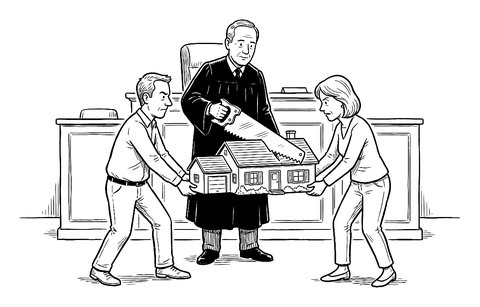
“King Solomon only had to threaten it.”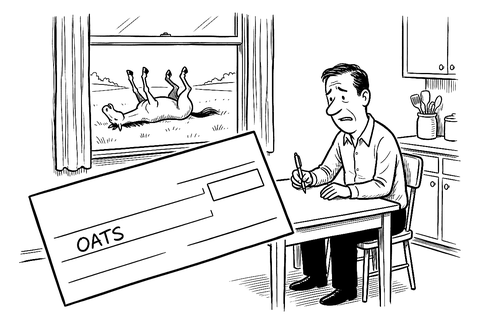
“Every month. For a horse that isn’t even mine anymore.”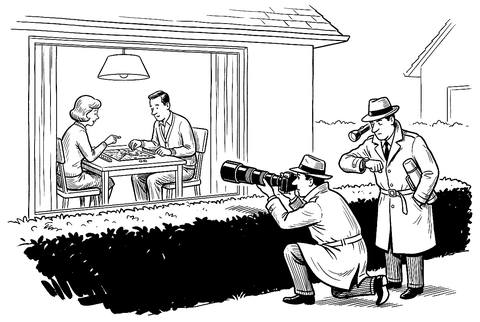
“Four hours. She’s up sixty points and nobody’s taken off so much as a cardigan.”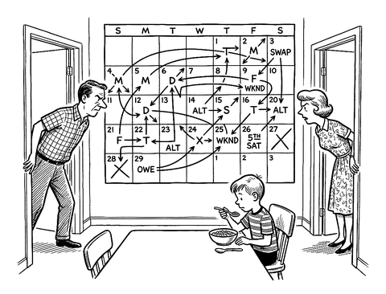
“So I have her alternate Thursdays unless it’s a month with five weekends, in which case you owe me a Tuesday from March.”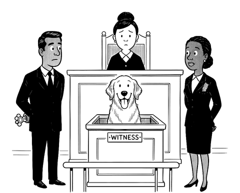
“Let the record reflect that the witness went to the one with the bacon.”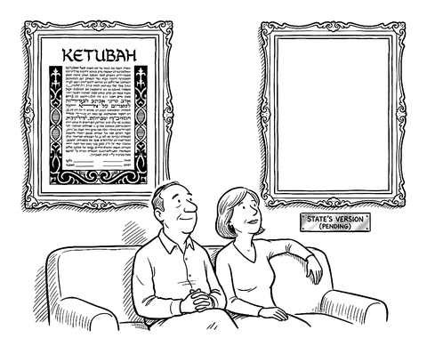
“We keep meaning to find out what goes in the other one.”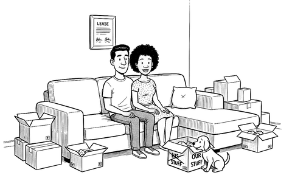
“We’re not making any big decisions right now. We just got a dog, a lease, and a sectional.”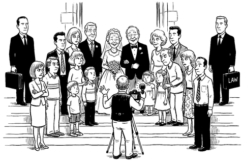
“Bride’s side on the left, groom’s side on the right, and counsel in the back, please.”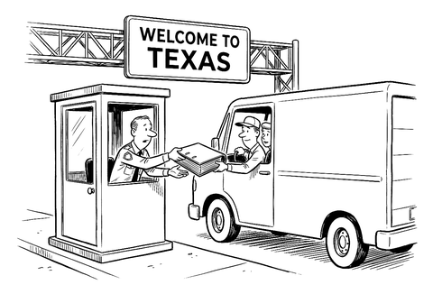
“Old contract, please. Here’s your new one. No, you can’t read it first.”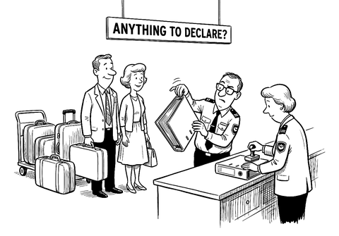
“It’s a marriage contract, sir. We were told it was valid in all fifty states.”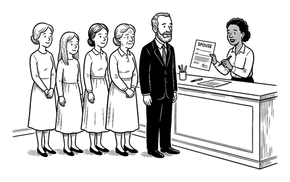
“We have the one line. For the others you’ll have to see a higher authority.”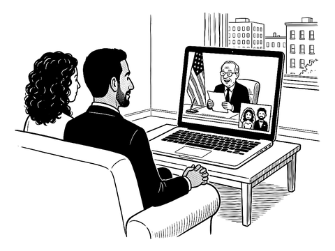
“By the power vested in me by Utah County, I now pronounce your pixels married.”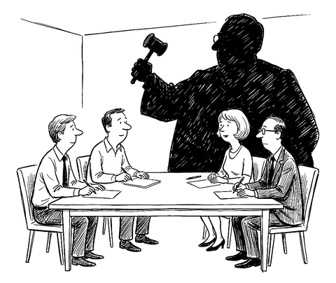
“Shall we begin? It’s just the four of us.”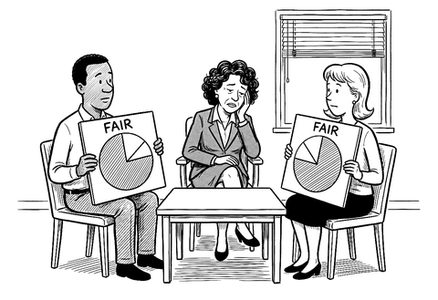
“Well, the good news is you agree on the label.”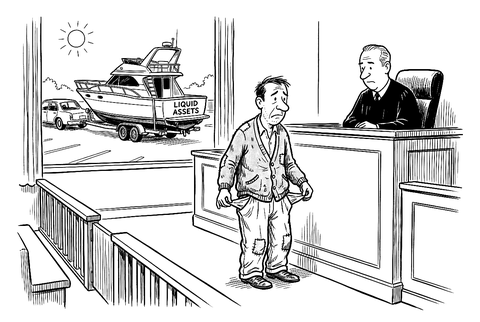
“As Your Honor can see, I’m barely staying afloat.”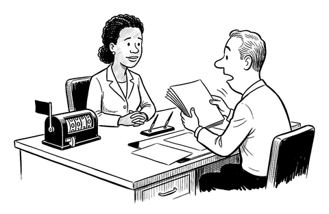
“Take all the time you need.”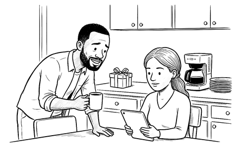
“What do you want for your birthday?” “A divorce.” “I wasn’t looking to spend that much.”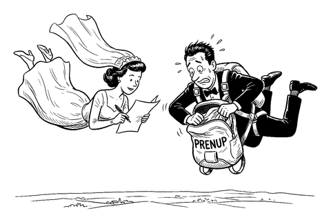
“I just need you to initial page four before we land.”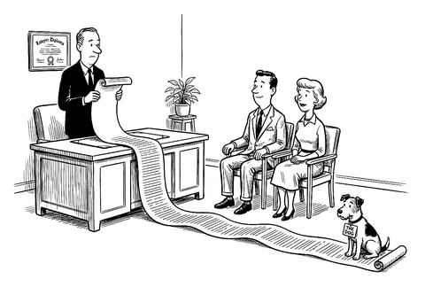
“Sections one through forty are boilerplate. He’s sitting on the only clause you two are going to fight about.”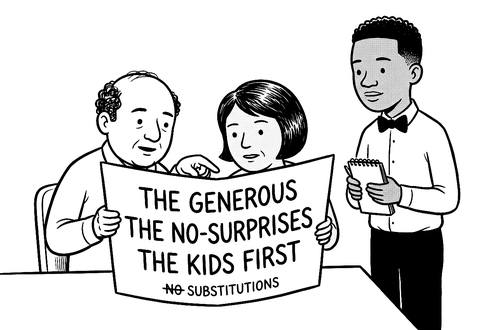
“And what is the default?” “The chef decides, sir. You find out when the bill comes.”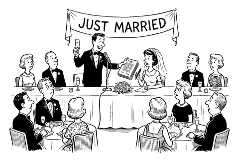
“… and while I have everyone’s attention.”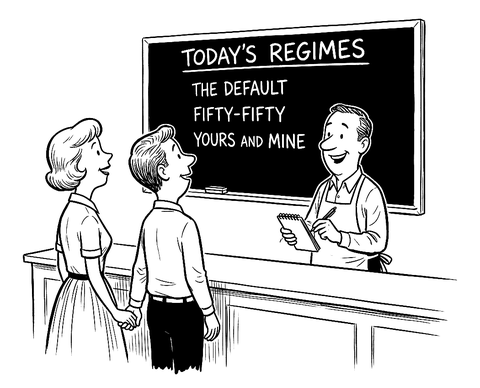
“And would you like to see the terms with that?”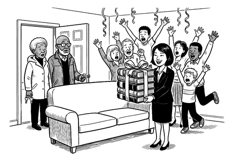
“Surprise! You agreed to all of this.”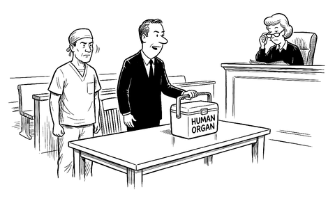
“We’ve brought a cooler, Your Honor, in the event the court rules from the bench.”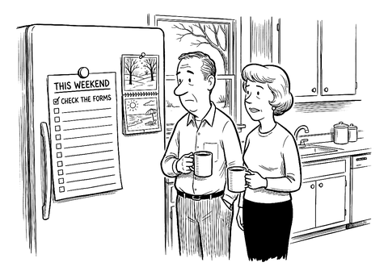
“Item one takes fifteen minutes. We’ve been meaning to get to it for nineteen years.”